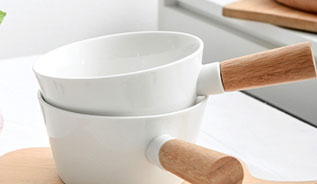

新闻资讯
NEWS INFORMATION
板式小凳子其实就是一种凳子的分类
板式小凳子其实就是一种凳子的分类，那么如果您比较喜欢做比较稳固的凳子的话，您可以选择板式小凳子。
MORE
阳台上的风景
我家阳台上，摆放有几盆花儿。大多叶子是绿绿的，有的还夹杂着开了一些小红花。看着这些纤小的小红花时
MORE
灯具照明带来家居别样的色彩
或许会有很多很多的人说，灯不就是一盏灯吗，它们只要具有发出光亮，让人能在能黑夜里能看清的功能。
MORE

如何使灯饰的装饰起到最大的作用？
如何使灯饰的装饰起到最大的作用？从十多年前单调的日光管、白炽灯、最简单的吸顶灯，到如今的水晶吊灯
MORE
认识和了解椅凳类古家具
中国古代人们习惯席地而坐，早期的家具是由席开始的。席的产生，约在神农氏时代。早期的床也作为坐类
MORE
实用的花架
随着人们的生活越来越好，花架也成了我们几乎每个家庭的一种必备装饰。花架的种类有很多，花架的造型。
MORE